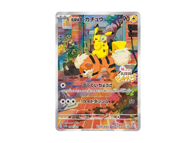
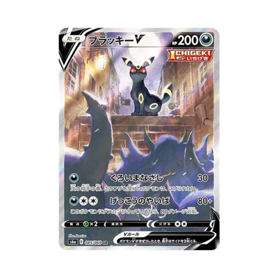

ミュウex UR 208/165
ミュウex UR 208/165
current: ¥15,400 ↑ (PayPay Flea Market) — checked 9m ago
prime time 17k
Low ¥14,000
 ブラッキーVMAX 245/184
ブラッキーVMAX 245/184
current: ¥21,500 ↓ (PayPay Flea Market) — checked 8m ago
slight down
Low ¥20,000
 レックウザVMAX CSR
レックウザVMAX CSR
current: ¥25,199 ↓ (SNKRDUNK) — checked 7m ago
slight down
Low ¥24,000
 レックウザ 252/184
レックウザ 252/184
current: ¥25,199 ↓ (SNKRDUNK) — checked 6m ago
slight down
Low ¥23,000
 ピカチュウVMAX 223/184
ピカチュウVMAX 223/184
current: ¥29,300 ↑ (SNKRDUNK) — checked 5m ago
slight down
Low ¥27,999
 リザードンV SR 103/100
リザードンV SR 103/100
current: ¥50,000 ↑ (Mercari) — checked 5m ago
Consider at 57k
Low ¥40,000
 イーブイ&カビゴンGX SM-P 297
イーブイ&カビゴンGX SM-P 297
current: ¥76,600 (SNKRDUNK) — checked 4m ago
Low ¥65,000
 アーマードミュウツー
アーマードミュウツー
current: ¥105,555 ↓ (Mercari) — checked 3m ago
Low pop
Low ¥99,999
 レックウザVMAX HR
レックウザVMAX HR
current: ¥43,800 ↑ (SNKRDUNK) — checked 3m ago
Low ¥38,000
 ブラッキーVMAX HR
ブラッキーVMAX HR
current: ¥16,900 ↓ (SNKRDUNK) — checked 2m ago
Low ¥16,000
 リザードンex 201/165
リザードンex 201/165
current: ¥76,000 ↓ (SNKRDUNK) — checked 1m ago
75k is pre-bubble
Low ¥69,000
 ミュウex SAR 205/165
ミュウex SAR 205/165
current: ¥60,800 ↑ (SNKRDUNK) — checked just now
55k is pre-bubble
Low ¥50,000
 ミュウV SR: SA 106/100
ミュウV SR: SA 106/100
current: ¥34,000 ↓ (SNKRDUNK) — checked just now
consider at 30k
8k pop
Low ¥8,000
 ロケット団のミュウツーex SAR
ロケット団のミュウツーex SAR
current: ¥22,999 ↓ (SNKRDUNK) — checked 12m ago
Low ¥22,000
 ミュウVMAX HR 118/100
ミュウVMAX HR 118/100
current: ¥23,740 ↑ (Mercari) — checked 12m ago
consider at 20k
1.5k pop
Low ¥22,000
 レックウザV SR 076/067
レックウザV SR 076/067
current: ¥148,800 ↓ (SNKRDUNK) — checked 11m ago
consider at 100k
Low ¥110,000
 カイリューV SR 074/067
カイリューV SR 074/067
current: ¥109,000 ↓ (Mercari) — checked 11m ago
Low ¥99,000

名探偵ピカチュウ SV-P 098current: ¥42,500 ↑ (SNKRDUNK) — checked 10m ago
bought mine at 46k
consider around 35k -- high pop
Low ¥40,000

ブラッキーv sr sa 085/069current: ¥76,500 ↓ (SNKRDUNK) — checked 9m ago
Consider 60k
Low ¥75,000